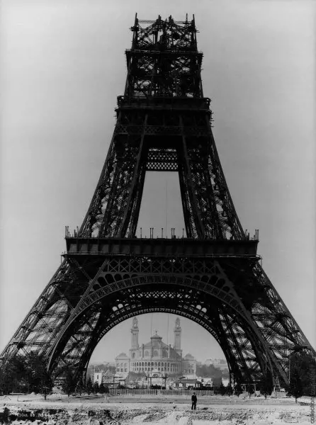
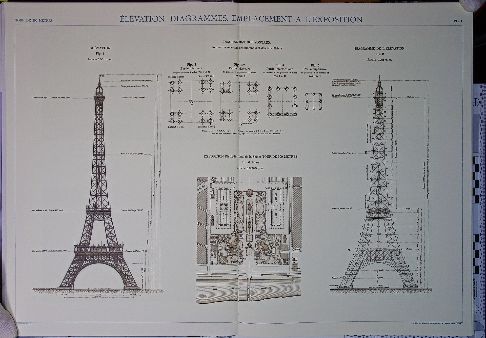
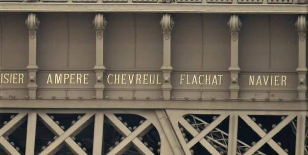
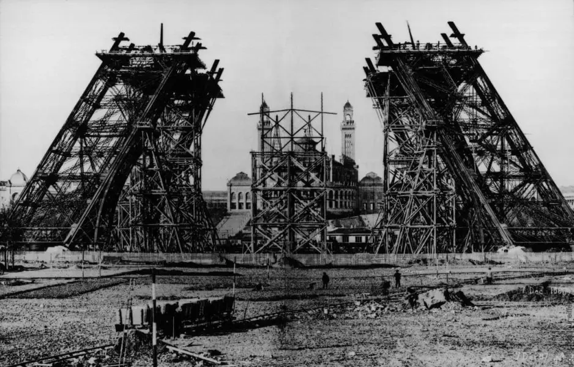
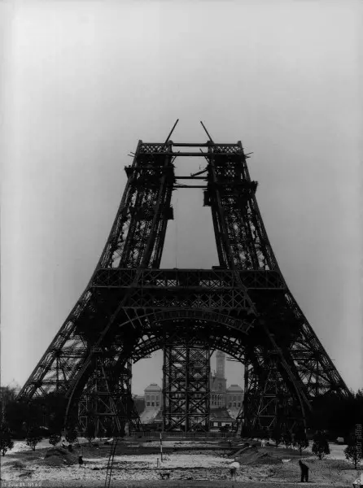

הסקיצה הראשונית של מגדל אייפל

עוד לפני שמגדל אייפל נבנה בפועל, הוכנו שרטוטים וסקיצות שהציגו כיצד המבנה אמור להיראות. מוריס קושלן היה בין המהנדסים שפיתחו את הרעיון הראשוני למגדל יחד עם אמיל נוגייה. הסקיצות הראשונות היו שלב חשוב בדרך להפיכת רעיון הנדסי יוצא דופן למבנה שניתן באמת לבנות.
תמונות מתקופת הבנייה
בניית מגדל אייפל תועדה בצילומים שמראים כיצד המגדל צמח בהדרגה מעל פריז. התמונות מאפשרות לראות את שלבי ההרכבה, את פיגומי העבודה ואת המבנה לפני שהגיע לצורתו המוכרת כיום. תיעוד זה חשוב במיוחד משום שהוא מאפשר להבין עד כמה הפרויקט היה מורכב וחדשני לתקופתו.


שרטוטים ומסמכים היסטוריים

השרטוטים ההנדסיים של מגדל אייפל מציגים את התכנון המדויק של המבנה עוד לפני השלמת הבנייה. באמצעותם ניתן לראות את צורת המגדל, את החלוקה לקומות ואת הדרך שבה תוכננו חלקי המתכת השונים. שרטוטים אלו היו חשובים מאוד בתהליך הבנייה, משום שהם אפשרו למהנדסים ולעובדים להבין כיצד כל חלק צריך להתחבר למבנה הגדול.
למה מסמכים כאלה חשובים?
מסמכים היסטוריים עוזרים לנו להבין לא רק איך המבנה נראה, אלא גם כיצד אנשים התייחסו אליו בזמן אמת ואיך הוא הוצג לציבור.
השמות החרוטים על המגדל
על מגדל אייפל חרוטים שמותיהם של 72 מדענים, מהנדסים ומתמטיקאים צרפתים. החריטות נועדו להוקיר את תרומתם להתפתחות המדע וההנדסה בצרפת. גם כיום ניתן לראות את השמות על המגדל, והם הפכו לחלק מהמורשת ההיסטורית שלו.

גלריה היסטורית

